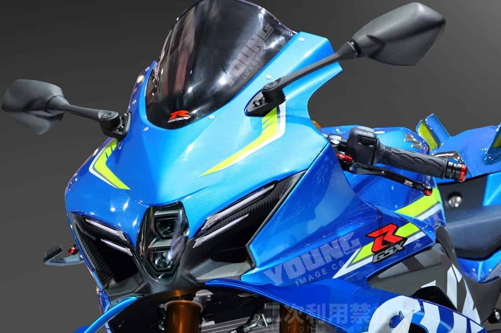

Suzuki GSX-R150
La Suzuki GSX-R150 es una motocicleta deportiva de la familia GSX-R con motor de 147 cm³, refrigeración líquida y potencia aproximada de 18.9 hp, diseñada para ofrecer un manejo ágil y emocionante tanto en ciudad como en carretera.
Este modelo deportivo incorpora tecnología moderna como inyección electrónica de combustible, frenos de disco con sistema ABS y luces LED, lo que mejora la seguridad y el rendimiento al conducir.
La motocicleta combina diseño aerodinámico con características avanzadas en su segmento, haciéndola popular entre quienes buscan una deportiva compacta y eficiente.
Además de su desempeño, la GSX-R150 destaca por su estilo agresivo y detalles que reflejan la herencia deportiva de la línea GSX-R de Suzuki, ofreciendo una experiencia de conducción atractiva para aficionados de las dos ruedas.

Visita la página oficial de la Suzuki GSX-R150 para más detalles y especificaciones.